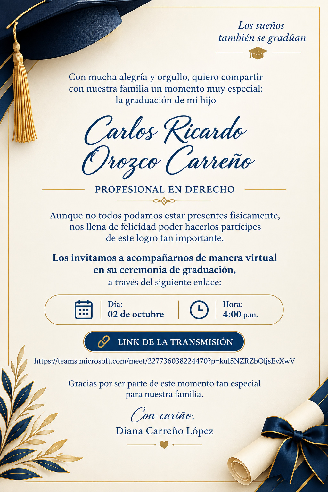

Entrar a la transmisiónToca el botón o la invitación. Se abrirá Microsoft Teams (o el navegador, si no tienes la app).
¿No abre? Copia este enlace y pégalo en tu navegador:
https://teams.microsoft.com/meet/227736038224470?p=kuI5NZRZbOljsEvXwV